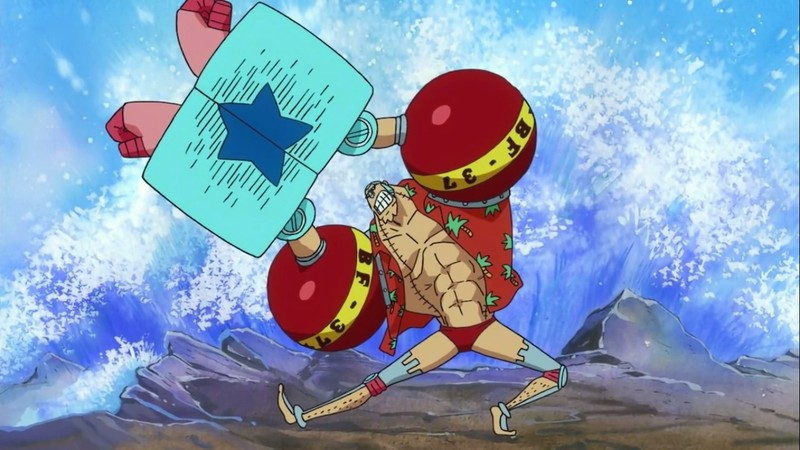

Thong tin ve One Piece

Thợ Đóng Tàu Franky
"Người máy" Franky là thợ đóng tàu của băng Mũ Rơm. Anh đến từ Water 7, vốn là lãnh đạo của Franky Family - một nhóm những người tháo dỡ tàu. Là thành viên thứ 8 của băng Mũ Rơm, Franky trước đó cũng từng là nhân vật phản diện. Sau này, anh gia nhập băng để thực hiện ước mơ của mình.
Thông tin cá nhân
Tên tiếng Nhật: フランキー
Tên tiếng La Tinh: Furankī
Lần đầu xuất hiện: Chương 329 (manga); tập 233 (anime)
Thuộc tổ chức: Băng Hải tặc Mũ Rơm; Franky Family (trước đây); Tom's Workers (trước đây)
Nghề Nghiệp: Hải tặc; Thợ đóng tàu; Thợ tháo dỡ tàu; Trùm thế giới ngầm (trước đây)
Biệt Danh: “Người máy” Franky ("鉄人（サイボーグ）"フランキー Saibōgu Furankī)
Tên thật: Cutty Flam (カティ・フラム Kati Furamu)
Tuổi:
Ngày sinh: 09/ 03
Mức truy nã: 94,000,000 ฿
Xuất hiện
"Người máy" Franky là thợ đóng tàu của băng Mũ Rơm. Anh đến từ Water 7, vốn là lãnh đạo của Franky Family - một nhóm những người tháo dỡ tàu
Trong tập 385, Franky nói rằng mình vốn đến từ South Blue, nhưng đã rời đó được 32 năm khi còn là một cậu nhóc 4 tuổi. Có nghĩa là Franky được 36 tuổi.
Tên anh vốn là Cutty Flam và anh bỏ cái tên đó theo lời đề nghị của Iceburg để che giấu thân phận của mình. Franky và các đệ tử vốn là địch thủ thuộc Water 7 Arc chống lại băng Mũ Rơm cho đến khi hoàn cảnh buộc họ phải trở thành đồng minh. Theo lời thỉnh cầu của Gia đình Franky, anh đã được phép gia nhập băng Mũ Rơm để thực hiện ước mơ của mình. Anh là thành viên thứ tám của băng Mũ Rơm và là người thứ bảy gia nhập băng của Luffy. Anh còn là thành viên thứ hai mà trước đó là nhân vật phản diện (người đầu tiên là Nico Robin).
Ngoại hình
Trước timeskip
Để thay đổi bản thân hoàn toàn, anh đã sống nhiều năm dưới thân phận thợ tháo dỡ tàu, thợ săn tiền thưởng và côn đồ đường phố ở Water 7. Franky là một người đàn ông lực lưỡng với chiều cao ít nhất 2m1, anh là người cao thứ hai trong băng Mũ Rơm. Cẳng tay anh khá to so với bắp tay. Anh sở hữu cơ ngực nở nang và săn chắc. Anh có một mái tóc màu xanh da trời và hình xăm ngôi sao đậm màu hơn trên cẳng tay. Lông mày của anh khá dài và xếch, mi dưới nổi bật chỉ có ba cọng. Cằm nhọn và chân cằm chẻ ba. Mũi giả làm từ sắt, đây là phần cơ thể duy nhất của anh không bị che phủ trong lớp da nhân tạo.
Franky trước tai nạn
Trước khi bị con tàu Puffing Tom đâm, cẳng tay Franky có kích thước bình thường, chiều cao tổng thể của anh cũng thấp hơn. Mũi và cằm do bị gãy quá nặng sau vụ tai nạn, dẫn đến việc anh phải thay thế chúng bằng sắt.
Anh thường mặc đồ bơi – đây là lý do tại sao mọi người gọi là tên đồi trụy, sơmi Hawaii banh rộng và xích vàng trên cổ. Hiếm khi mà anh cài nút áo, mặc áo tay dài và quần hay đi giày trừ trường hợp bắt buộc, hoặc có người yêu cầu anh mặc. Anh không thích người khác can thiệp vào cách ăn mặc của mình, điều này thể hiện khi Nami ở trong cơ thể anh và cô cố cài nút áo, anh đã rất khó chịu.
Trước khi trở thành người máy, Franky ăn mặc hở hang đơn giản vì anh thích thế. Về sau, cơ thể người máy hạn chế anh mặc nhiều đồ, đặc biệt là trong lúc chiến đấu. Ngược lại, Franky luôn đảm bảo lưng mình được che chắn bởi vì nó là điểm yếu – phần da thịt thật, đây là nơi duy nhất trên cơ thể anh không thể với tới và cải tạo. Không may là, Franky vẫn rất dễ bị lạnh và rét vì cách ăn mặc nửa lỏa của mình.
Khi băng Mũ Rơm bị chia cắt, Franky mặc áo choàng đỏ để chống lạnh ở Barajimoa, nhưng sau khi làm nổ phòng thí nghiệm của Vegapunk, phần da mặt và nửa thân trước bị đốt cháy để lộ khung xương kim loại và anh phải choàng lên người tấm thảm da hổ để tránh dọa mọi người trong thời gian ở lại đây.
Anh còn có một cặp kính mát và luôn đeo nó khi tình hình bắt đầu trở nên nghiêm trọng.
Sau timeskip
Trong hai năm ở một mình, Franky dùng bản thiết kế của Vegapunk để cải tạo hoàn toàn cơ thể của mình, sửa chửa thương tổn anh tự gây ra và thay mới một số bộ phận cũ. Franky có thể điều khiển và đổi kiểu tóc của mình bằng cách nhấn giữ mũi trong ba giây. Trước kia anh hay để tóc hất ngược ra sau, nhưng giờ thì anh thích kiểu đầu đinh, đôi lúc anh sẽ thay đổi kiểu tóc để phù hợp với bối cảnh.
Anh có 2 đường xẹo khâu trên thân chạy dọc xuống từ gáy, điều này cho thấy anh đã từng khâu lại lớp da lưng của mình.
Cặp mắt của anh cũng đã được đổi. Bên ngoài là lớp thấu kính tương tự mắt người, bên dưới là cặp mắt robot
Vai, thân mình và cánh tay của anh đều to hơn trước, bàn tay bắt vít trông như tay người máy, anh từng tiết lộ rằng bên trong cánh tay khổng lồ vẫn có tay máy với kích thước bình thường. Anh mặc nịt vớ bằng kim loại. Anh đã thay thế khuỷu tay bằng hai cái bản lề lớn màu xanh da trời, bả vai đổi thành khớp cầu lớn màu đỏ với dòng chữ “BF-37” bên trên, cẳng tay hình khối hộp lớn màu xanh da trời xăm biểu tượng ngôi sao đặc trưng tách nửa hai bên. Điều ngạc nhiên là, cẳng tay Franky vẫn có lông tay mặc dù chúng hoàn toàn là máy móc.
Hiện tại anh mặc áo Hawai màu đỏ với họa tiết cây dừa khô và quần bơi cùng màu
Tính cách
Franky là người cứng cỏi, lập dị, phóng khoáng và thường không tuân thủ các nguyên tắc. Anh thích gì làm nấy, bất kể thời gian, tuy vậy điều anh muốn thường không ngoài việc tạo một con tàu mạnh mẽ hay bảo vệ những người anh quan tâm và đôi lúc xuất hiện một cách lập dị vì phong cách kỳ lạ và sở trường tạo nên những thứ kỳ quặc (ví dụ Franky Centaur). Trái ngược với cách cư xử kỳ cục và ngu ngốc của mình, Frank đã chứng minh bản thân là một người trưởng thành và đáng tin cậy nhất trong băng Mũ Rơm, hay làm trò gây cười cho những thành viên trẻ tuổi nhưng luôn nghiêm túc suy nghĩ các vấn đề. Franky là một người giàu lòng vị tha, anh nhanh chóng bảo vệ mọi người và hành động kịp thời khi bạn mình bị hại; anh tin rằng bất kể một người như thế nào, họ cũng sẽ không bao giờ bị kỳ thị hay loại bỏ chỉ vì thân phận của mình. Đây là nguyên nhân anh làm bạn và bảo vệ những người bị chèn ép và bắt nạt một cách bất công
Nhờ thái độ che chở và không thiên vị, anh nhanh chóng làm bạn và kết minh với bất cứ loại người nào, kể cả bọn côn đồ đường phố hay hải tặc. Anh như một người anh cả, và được tôn trọng vì luôn nỗ lực bảo vệ những người khác, như với Nico Robin hay những thành viên trong Franky Family. Luffy và Franky có vài điểm tương đồng, cả hai đều rất hiếu chiến, đôi bên luôn tôn trọng nhau, bỏ qua những bất đồng từng có trước đây. Tính cách của Franky có thể thay đổi tùy vào loại nước giải khát trong hệ thống của anh.
Franky cũng rất cứng đầu, khi Iceburg bảo anh rời khỏi Water 7, anh từ chối ngay lập tức mặc cho việc anh ở lại có thể để lộ vị trí bản thiết kế Pluton.
Anh có thói quen thêm cụm “tuần này” trong câu cảm thán, ví dụ như “Đương là tôi khỏe rồi, tuần này tôi cực kỳ khỏe” hay “Tôi vẫn luôn như thế cả tuần này”.
Franky luôn vô tình bị liên hệ đến những thứ “đồi trụy” bởi cách ăn mặc, tính cách quái lạ và tình huống anh vướng vào. Nếu bạn gọi anh là tên đồi trụy, anh sẽ xem như đó là một lời khen. Ngoài ra, Franky hay dùng “hentai” (đồi trụy) để thay thế các từ gần âm. Thẩm mỹ thời trang kém có lẽ xuất phát từ việc óc sáng tạo của anh thiên về thủ công và cơ khí hơn, điều này giải thích cho phong cách thời trang luôn là quần bơi, xích vàng quanh cổ và một cái áo sơmi khoác ngoài che đi phần thân trên bệ vệ của mình.
Bên cạnh đó, Franky rất dễ xúc động khi nghe người khác kể về chuyện buồn hay cảm động, anh sẽ òa óc không kiềm chế. Anh thừa nhận rằng mình là một người nhạy cảm và tin rằng đó là một điều đáng tự hào khi để mọi người thấy gương mặt tràn đầy nước mắt của mình, nhưng anh sẽ ngăn mình bậc ra tiếng khóc một cách kịch liệt bằng cách giấu khuôn mặt đi và gọi mọi người xung quanh mình là “đồ ngốc” vì đã thấy anh yếu đuối. Khi xúc động đến đỉnh điểm, anh sẽ lôi cây ghi-ta không biết lấy từ đâu và yêu cầu mọi người nghe bài hát anh viết dựa trên câu chuyện vừa khiến anh xúc động kia.
Một điều đáng nói nữa là, Franky cảm thấy có tiền mà không sử dụng thì rất tồi tệ. Vì vậy khi phát hiện mình vẫn còn dư một triệu beri từ số tiền mà họ cướp được từ Usopp, anh cầm lấy khao mọi người một bữa. Đặc điểm này dường như ảnh hưởng đến các thành viên còn lại của Franky Family, bằng chứng là họ đều không thể giữ một đồng nào trong túi lâu được.
Trước đó Franky thường gọi mọi người bằng biệt danh, nhưng sau hai năm chia tách, anh gọi các thành viên khác bằng tên và không dùng biệt danh nữa.
Khả năng thể chất
Xét về sức mạnh thể chất vốn có, Franky có thể dễ dàng được xếp vào thành viên mạnh nhất băng. Những năm tháng làm thợ tháo dỡ tàu cũng như là thợ săn hải tặc dường như đã giúp anh có sức mạnh phi thường; thậm chí khi gần cạn cola, anh vẫn đủ sức để xử lý một con voi trưởng thành đang sung sức, bằng cách chặn đứng nó trước khi nắm vòi kéo lê như một con búp bê rách.
Trong lần đầu tiên chạm trán với CP9 ở Water 7, Franky đã cho thấy mình đủ sức mạnh để phá giải chiêu Tekkai của Blueno và nhanh chóng áp đảo hắn.
Franky còn có thể đánh ngang với Luffy trong cuộc đụng độ trước đó của họ trước khi nhóm thợ đóng tàu Galley-La can thiệp
Ngoài sức mạnh, Franky còn thể hiện kỹ năng đáng kể với bất cứ vật gì trên tay, kể cả trong chiến đấu (ví dụ như việc anh sử dụng rất khéo léo và hiệu quả một cặp côn tạm bợ để đánh với Tararan). Ngay cả khi không sử dụng những chức năng người máy, kỹ năng chiến đấu của Franky vẫn dư sức để thắng những sát thủ chuyên nghiệp. Việc có thể một mình đánh bại Fukuro của CP9 đã chứng minh sức mạnh của anh. Phong cách chiến đấu của Franky tương tự với môn boxing, nhưng anh sẽ không ngần ngại chơi xấu nếu cần thiết.
Franky còn có một đôi tai rất thính thể hiện qua việc anh có thể nghe được tiếng những chú lùn mở cửa Smile Factory từ khoảng cách rất xa khi đang bị Senior Pink đâm sau lưng.
Chuyên gia kỹ thuật máy móc và xây dựng
Ngoài cơ thể người máy của mình, Franky cũng là một thợ đóng tàu và thợ mộc ưu tú nhờ làm việc dưới sự hướng dẫn của Tom. Dù dành nhiều năm tháo dỡ tàu nhưng kỹ năng thợ mộc của Franky vẫn không bị ảnh hưởng; bằng chứng là khi anh có thể hoàn thành Thousand Sunny với sự giúp đỡ của Iceburg và những đốc công còn lại của Galley-la trong thời gian cực ngắn. Bằng hiểu biết của mình, Franky đã nắm được ý tưởng của laze ánh sáng, thứ mà chỉ có Vegapunk từng tạo ra.
Bản thân là một thiên tài, anh đã chế tạo một kiểu đại bác tích tụ không khí nhanh chóng trong một không gian hạn chế trước khi phóng ra dưới dạng khí nén với sức mạnh đủ để phá hủy một diện tích lớn cũng như cung cấp một lực đẩy khủng khiếp, đóng vai trò là nền tảng ra đời cho chiêu thức “Coup De Vent” của anh. Anh tự thiết kế Thousand Sunny với nhiều chức năng độc và lạ như Coup De Burst và hệ thống Soldier Dock.
Franky đã xây một cây cầu hoàn chỉnh bắc qua một khoảng không lớn, thậm chí anh còn thêm nhiều chi tiết nhỏ như tay vịn chạm khắc trong một khoảng thời gian cực ngắn (tuy rằng anh muốn thêm 30 giây nữa vì anh không hài lòng với mẫu chạm khắc đó). Bằng cách nào đó Franky cũng có thể xây một cầu thang giữa không trung, dù nó có thể chịu được sức nặng của con người nhưng không thể đứng vững lâu. Anh gọi nó là “Franky Skywalk”, dùng trong trận đánh với Oars ở Arc Thriller Bark. Ngoài ra, Franky có thể nhanh chóng phong ấn Caribou trong thùng rượu, không cho hắn trốn thoát dù hắn có năng lực trái ác quỷ.
Cơ thể người máy
Franky là người với những bộ phận nhân tạo, thường được biết đến với cái tên “người máy” hay người lai cơ khí. Phần cơ thể trước của anh được bọc thép và miễn dịch với hầu hết các đòn tấn công, trong khi đó phần lưng, nơi anh không thể với tới, rất dễ bị tổn thương. Cơ thể anh được trang bị nhiều loại vũ khí khác nhau, kể cả tên lửa, và cánh tay phải cũng có thể kéo dài, anh có khả năng phun lửa cũng như phóng khí áp từ nhiều bộ phận khác. Phần bụng của anh chứa một ngăn lạnh giữ ba chai cola là nhiên liệu cho Franky cũng như những đòn tấn công của anh. Tính cách của Franky cũng bị ảnh hưởng bởi đồ uống được trữ trong ngăn lạnh của mình. Anh có thể tiêu hết một lượng lớn cola trong chớp mắt để phóng khí áp từ cánh tay, tận dụng những luồng khí áp này để dùng các kỹ năng khác như chiêu “Coup de Vent” cực mạnh
Phiên bản BF-36
Những thay đổi sau này của cơ thể Franky mang đến cho anh sức mạnh rất lớn, vượt qua cả Nero và Fukuro của CP9. Tuy nhiên phần da thịt thật ở lưng đã trở thành điểm yếu lớn nhất của anh, khi Franky cải tạo cơ thể mình, anh không thể với tới nó. Và mặc dù không được cải tạo, lưng anh vẫn đủ dày để chịu đựng được nhiều phát súng liên tiếp hay chiêu Rankyaku từ tín đồ Rokushiki.
Thêm vào đó, tuy khung xương được gia cố bằng thép đặc, cơ thể người máy của Franky vẫn có thể nổi trên mặt nước. Điều này cho thấy Franky cũng là một tay bơi kiệt xuất, thậm chí trước khi trở thành người máy. Việc lúc nhỏ anh bơi nhanh hơn những con Hải Vương – thứ mà anh thường xuyên cố tiêu diệt bằng loạt vũ khí Battle Franky, đã chứng minh điều này. Bằng chiêu “Franky Bơi Bướm”, anh thậm chí có thể bơi ngược lên thác nước ở Enies Lobby.
Tay trái của Franky chủ yếu được sử dụng như một khẩu súng; một khẩu súng nhiều nòng có thể bật ra từ cổ tay anh, bất cứ ngón tay nào của anh cũng có thể nhả đạn, và bằng cách vặn tay mình qua một bên, Franky để lộ khẩu đại bác ở cánh tay với bàn tay trái như một thiết bị nhắm bắn. Tay phải Franky là một nắm đấm sắt dưới lớp vỏ trông có-vẻ-bình-thường, bàn tay có xích sắt giúp anh tấn công từ xa.
Một trong những chiêu thức quen thuộc của Franky là Strong Right: Franky phóng nắm đấm phải của mình ra trước và kéo nó về thông qua dây xích, tương tự như Gomu Gomu no Pistol của Luffy.
Một chiêu thúc khác đó là Coup de Vent: Franky nối hai cánh tay như hình chữ T và phóng ra một luồng áp khí lớn đủ để phá hủy một khu vực lớn. Coup de Vent là chiêu thức mạnh nhất đồng thời cũng hao tốn cola nhất.
Một chiêu thúc khác đó là Coup de Vent: Franky nối hai cánh tay như hình chữ T và phóng ra một luồng áp khí lớn đủ để phá hủy một khu vực lớn. Coup de Vent là chiêu thức mạnh nhất đồng thời cũng hao tốn cola nhất.
Một điều được chứng minh trong trận đánh của Franky và Fukuro, khi Chopper đưa nhầm nước rau quả và trà, tùy vào loại đồ anh uống mà kiểu tóc và thái độ sẽ thay đổi. Sức mạnh của Franky cũng tăng lên rất nhiều khi anh có nhiều cola trong ngăn lạnh ở bụng, và anh cần cola như một loại nhiêu liệu cho hầu hết các chiêu thức. Kiểu tóc là một loại thước đo cola có trong bụng anh, chúng sẽ dựng đứng lên nếu cola đầy và xẹp xuống khi cola hết. Ngăn lạnh ở bụng Franky có thể chứa ba chai cola, tương đương 6 lít.
Phiên bản BF-37
Sau hai năm, Franky biến đổi cơ thể triệt để, trở nên to lớn và tối ưu hơn về cả bề ngoài và chức năng. Franky có lẽ đã chạm đến ngưỡng hiểu biết về những công nghệ vượt trội, vì hầu hết những nghiên cứu về công nghệ tương lai của Hải Quân và toàn thế giới (như Pacifísta và sự đồng hóa trái ác quỷ vào vũ khí) từ tiến sĩ thiên tài Vegapunk được sử dụng để nâng cấp cơ thể Franky.Cần lưu ý rằng Franky biến đổi cơ thể thành BF-36 được bắt đầu như một cuộc giải phẫu để cứu mạng anh, và trên quan điểm y học, nó được thực hiện một cách khá vội vàng, vì lúc đó anh đang bị thương nặng cả trong và ngoài cơ thể; trong khi quá trình biến đổi thành BF-37 mất hai năm ròng lên kế hoạch và thực hiện lên cơ thể đã là người máy của anh trong phòng thí nghiệm tuy bị bỏ hoang những vẫn đầy đủ các thiết bị máy móc tiên tiến, kinh nghiệm cá nhân trước đó của Franky cũng được tính vào khi có thể tùy biến được bản vẽ, chức năng cũng như hiểu được những thông tin Vegapunk bỏ lại.
Franky tiến một bước xa hơn trong việc cải biến cơ thể của mình bằng cách thêm những chức năng thiết thực như “Đèn Núm Vú”, hay những chức năng không cần thiết như thay đổi kiểu tóc. Với những thứ trên, sau timeskip, Franly là một lực lượng đánh gờm.
Những vũ khí mà Franky đã bày ra sau timeskip có lực công kích và phá hoại nhiều hơn ở phiên bản BF-36. Tới hiện tại, anh có thể phóng tên lửa phát nổ từ bờ vai của mình, hay cải biến chiêu “Coup de Vent” thành “Franky Radical Beam” (Tia Sáng Phóng Xạ) bắn ra chùm sáng laze thay vì là không khí trước đây, cùng với những vũ khí khác. Anh cũng nâng cấp một số vũ khí ở phiên bản BF-36 như đòn phun lửa và khả năng nhả đạn từ tay. Anh còn có thể trang bị laze vào vũ khí của mình trong khi người ta nói chỉ có Vegapunk mới có thể làm được, điều này càng chứng minh chuyên môn kỹ thuật của anh.
Franky vẫn sử dụng cola làm nhiên liệu hoạt động, và hiện tại anh đã đủ sức chịu đựng một trận đánh kéo dài với Senor Pink, Dellinger, Machise và Hải Quân dưới sự chỉ huy của Bastille ở Drossora, trước khi lui về sau để nạp cola. Cũng như phiên bản trước, Franky không thể với tới lưng mình, phần này vẫn không được cải tạo.
Phiên bản BF-38
Franky Shogun là tên một con robot khổng lồ, là cỗ máy một người lái, bản thân Franky có thể vào phòng điển khiển ở ngực của nó và vận hành nó từ đây. Nó được trang bị một thanh kiếm lớn tên “Franken”. Tuy nhiên, vì anh không biết kiếm thuật, những đòn tấn công bằng kiếm của anh thường không có hiệu quả. Hầu hết những chiêu bắn phá xuất phát từ chính bản thân Franky. Franky có thể dùng nắm đấm khổng lồ để tung ra một cú đấm uy lực và có thể đè đối thủ bằng sức nặng của mình.
Ban đầu, Shogun hầu như vô dụng vì mọi đòn tấn công đều xuất phát từ chính cơ thể Franky. Tuy nhiên, ở trận đánh với Baby 5 và Buffalo, sức mạnh thật sự của nó mới được thể hiện. Shogun rất kiên cố, khó có thể bị thương, đồng thời được trang bị nhiều vũ khí hạng nặng, cụ thể đòn tấn công của Baby 5 chỉ có thể hất ngã nó mà không gây thương tích gì. Con robot của anh cũng có thể thực hiện đòn tấn công tương tự như Coup de Vent và Franky Radical Beam với tên gọi “General Cannon”, bắn ra một lượng khí áp siêu lớn. Franky nói chiêu này có thể so sáng với “Geon Cannon” của Thousand Sunny. Ngoài ra, Franky Shogun có thể cung cấp một nơi trú ẩn kín đáo, nhờ nó Franky có thể đứng giữa những đám mây khí độc của Caesar.
Vũ khí
Mặc dù Franky rất hiếm khi mang vũ khí theo bên mình (thực tế anh nhét chúng đầy trong người), anh vẫn hay sử dụng nhiều công cụ mà hầu hết là đồ nghề thợ mộc. Có lúc, anh mang theo các loại vũ khí thường mà anh sử dụng thành thạo, ví dụ như cặp côn đa năng và đại bác cầm tay.